Introduction
Mono Green Stompy is philosophically a very simple deck. Play undercosted, hard to remove creatures and attempt go under their game plan. The deck features a surprising amount of maindeck interaction against most decks, and punches higher than the budget suggests. While we are playing an aggro deck, there are a lot of cards that can provide value up to and during the late stages of a game.
Stompy is an excellent starting point in Modern for two primary reasons. The first is that Stompy is a cheap deck, and none of the core cards are truly expensive. While it doesn't segue into a tier one deck, it plays better than impressions of tier decks made with the same budget. Secondly, it is easy to pick up but definitely has a lot of depth to learn and master.
There is an active thread on the MTGSalvation forums found here. There are 195 pages of discussion at the time of writing, which the following tech is based upon. This is an attempt to provide the information spread through that thread in a single coherent piece. The original Modern deck was created by one Hans Christian Ljungquist, who posts as user_369654, and the current custodian of the thread is the user destroyermaker. My thanks to them both for their work in developing the deck and the primer.
Deck Tech
Mainboard
This example decklist is taken from the MTGSalvation primer. There are different options in building the mainboard, but this list is a solid starting place. There have been successes with more aggressive versions in recent opens - these lists will be discussed further on. Most of the variation comes from the sideboard, depending on the expected meta. A verbose list isn't given, but options will be given.
Lands: 22
- 17 Forest
- 2 Horizon Canopy
- 3 Treetop Village
Creatures: 24
- 4 Dryad Militant
- 4 Experiment One
- 4 Kalonian Tusker
- 4 Leatherback Baloth
- 4 Strangleroot Geist
- 4 Avatar of the Resolute
Other spells: 13
- 3 Aspect of Hydra
- 3 Dismember
- 4 Rancor
- 4 Vines of Vastwood
Lands
Forest
We run anything between 20 to 22 lands inclusive, most of which will be your common or garden forest. Some people consider it best if they all match.
Treetop Village
Treetop village provides a use for excess mana in the face of flood, removal, and board wipes. It can avoid most of the latter threats, and provides an extra body when required. Having trample adds much needed reach when combined with pump spells, and often tips the edge of a board stall. Seeing more than one in a hand is rarely a Good Thing, as is one being your sole land. For these reasons, we run two to three copies.
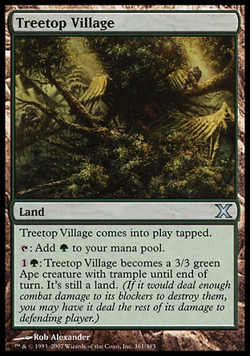Horizon Canopy
Horizon Canopy is a very optional card, often costing as much as the rest of the deck. It provides some much needed card draw, and paying one life for a green mana isn't too much of a drawback - by the time it is, the sacrifice ability should be relevant. If you want to spend money on copies of this card, running more than two would possibly make for painful opening turns and isn't recommended.
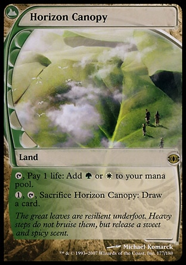One CMC Creatures
Experiment One
This little guy is the key card in an explosive start, often becoming a 2/2 or 3/3 for one mana. The regeneration ability allows it to survive removal or act as an emergency chump blocker. The best option for one mana creatures in this deck.
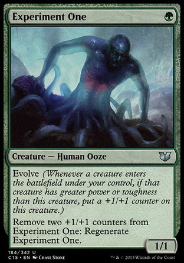Dryad Militant
While this card may not be as survivable as a Young Wolf, the second point of power allows it to pump our Experiment Ones and it has a relevant ability.
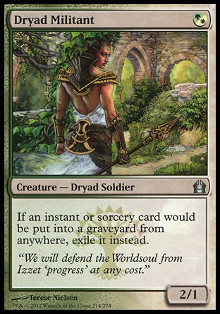Alternative Choices
Young Wolf
While a 1/1 for one mana is usually sub-par, undying provides excellent value against damage based removal and plenty of combat versatility. Undying triggers evolve on your Experiment Ones, although it unfortunately doesn't protect against -1/-1 counters.
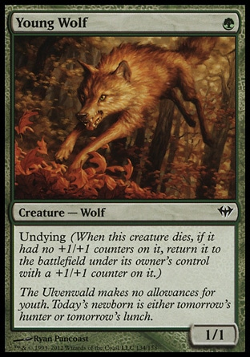Kessig Prowler
A more aggressive deck may want to run twelve or even sixteen one drops. Kessig prowler is one option in those builds, probably being the fourth-best creature in that spot. Lacking the survivability of Young Wolf or the shenanigans of Dryad, it has the ability to flip into a 4/4. However, that ability seems unlikely to be relevant often, so cutting any of the above cards to run this one wouldn't be a great idea.
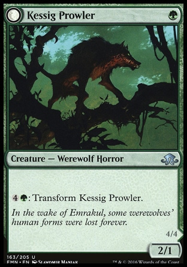Nettle Sentinel
There appears to be a recent debate about whether this card has a place in the deck. The consensus is leaning towards no, as it wouldn't be a consistent enough attacker to warrant inclusion. There are posters who are insistent that Nettle Sentinel has been tried in the past and found not to work, and I am inclined to agree with them.
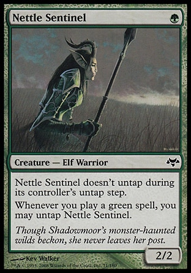Two CMC Creatures
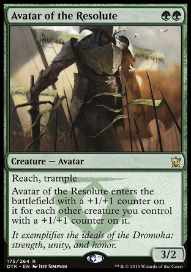 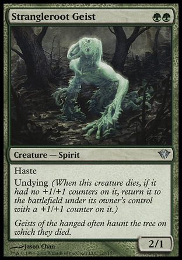 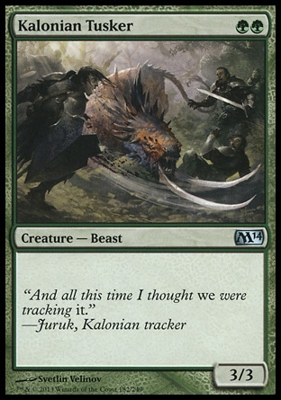Alternative Choices
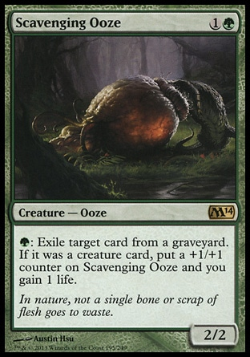 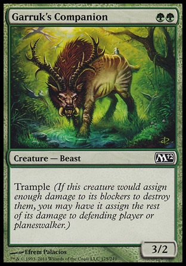